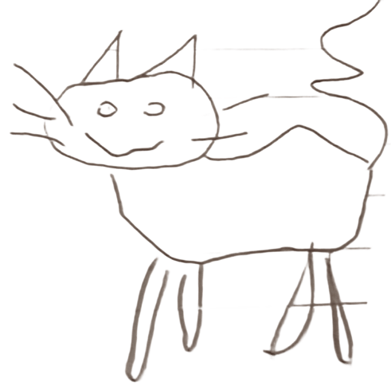

На последней странице старой тетради кто-то однажды нарисовал кота. Рисунок был странный: круглая голова, две палочки-лапки, длинный хвост и пустые глаза.
Девушка закрыла тетрадь и ушла спать.
Ночью в комнате было тихо, только страницы иногда шуршали сами по себе. Если бы кто-то посмотрел на тетрадь, он бы заметил, что кот на рисунке стал немного другим. У него появилась новая линия — будто кота медленно рисовали ещё раз.
Но кот медленно рисовал себя сам.
Каждую ночь он добавлял одну маленькую черту. Сначала появились усы. Потом когти. Потом рот.
Наутро под последней страницей тетради появился новый лист — его там раньше не было. На нём был рисунок — уже не кот. Это была дверь. А над дверью была маленькая подпись, кривыми карандашными буквами: